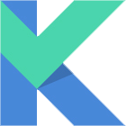

Katan
A fast, simple and modularly adaptable game server panel.

Intuitive
With a UI built and designed with the most modern currently, navigate fluidly and quickly between your servers and the control panel.

Security in mind
Katan focuses on the security of the identity of those using it, with cutting-edge encryption, we will take care of this for you.

Free & Open Source
Katan is free and anyone can simply download, install and use, in addition to being open source, there is not much to say.